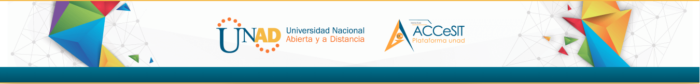

Autoevaluacion
Datos de Contacto UNAD
- Si usted desea comunicarse con la Universidad Nacional Abierta y a Distancia UNAD, puede hacerlo a través de los siguientes canales y horarios de atención:
- En Bogotá D.C. (Colombia) Tel: (+57)(1)375 9500 Línea gratuita nacional: 01 8000 115223
- Correo electrónico de atención al usuario: atencionalusuario@unad.edu.co
- Horario de atención: lunes a viernes de 7:00 a.m. a 7:00 p.m. | sábados de 8:00 a.m. a 2:00 p.m.
- Línea anticorrupción. PBX:(+57) 1 344 3700 ext. 1544